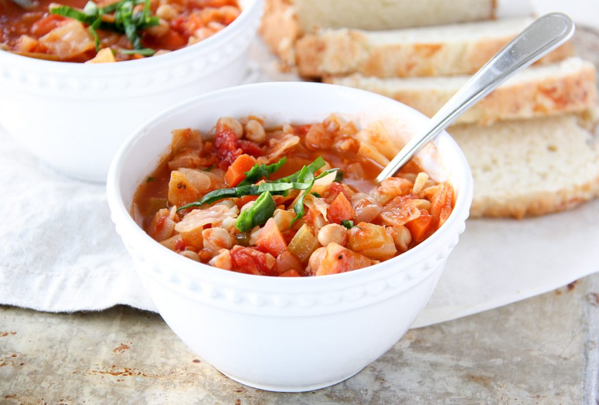

3 easy recipes under $20

Creamy Tomato Macaroni & Cheese
Ingredients
-1 cup diced tomatoes (I sometimes add 1 1/2 cups)
-1 1/2 cups cheese (mild, medium or sharp Cheddar Cheese or Monterey Jack)
Intructions
1:Cook the pasta according to package directions. Then drain and set aside.
2:In a pan, melt the butter and cook the onion and garlic until lightly browned.
3:Add the flour to the onion mix and stir, mixing thoroughly.
4:Whisk in the milk, and stir until the mixture is thickened.
5:Add the tomato paste, diced tomatoes and oregano. Stir until the tomatoes are warmed through.
6:Gradually stir in the grated and parmesan cheeses.
7:Add the pasta and stir.
8:Serve right away and enjoy!
Creamy Parmesan Garlic Pork Chops
Ingredients:
Pork Chops:
-4 or 5 pork chops (about 1 inch thick)
-salt & fresh ground pepper
Parmesan Garlic Sauce:
-2 cloves of garlic (minced)
-½ cup grated parmesan cheese
Intructions
1:In a skillet on medium/high heat, warm up 1 tbsp olive oil and 1 tbsp butter.
2:Season both sides of the pork chops generously with salt and fresh ground pepper.
3:Add the pork chops to the skillet and sear on both sides, about 3 minutes per side.
4:Remove the pork chops and transfer them to a plate.
5:Using the same skillet melt 2 tbsp butter.
6:Add the onions, minced garlic and sliced mushrooms, and cook until soft and the moisture from the mushrooms has cooked off.
7:Add the flour to the mixture, mix well and cook for 1 minute.
8:Stir in the chicken broth and and simmer until the sauce thickens. Make sure to scrape up and stir in all the good brown bits from the bottom of the skillet. If the sauce seems too thick, you can add a little extra broth or water.
9:Stir in the cream and parmesan cheese.
10:Season with salt & pepper
11:Add the pork chops and simmer for about 10 – 15 more minutes, or until the chops are cooked thoroughly. Stir often so the sauce doesn’t burn to the pan.
Winter Vegetable Soup
Ingredients:
-1 cup chopped cauliflower
-1 1/2 cups choppped carrots
-1 (28 ounce) can diced tomatoes
-1 (680 mL) can tomato sauce (plain)
-1 (540 mL) can chickpeas
Intructions
1:In a soup/stock pot melt the butter, and saute the cabbage, cauliflower, carrots, celery, onions and garlic in butter, until soft.
2:Add the oregano, bay leaves, salt, pepper, diced tomatoes, tomato sauce, chickpeas and broth.
3:Simmer for about 30 minutes.
4:In the mean time, cook your noodles in a seperate pot. This is so they dpnt soak up all the liquid in the soup. Or if you have leftover noodles from a pasta night, use those!
5:Just before you are ready to eat, add the cooked noodles.